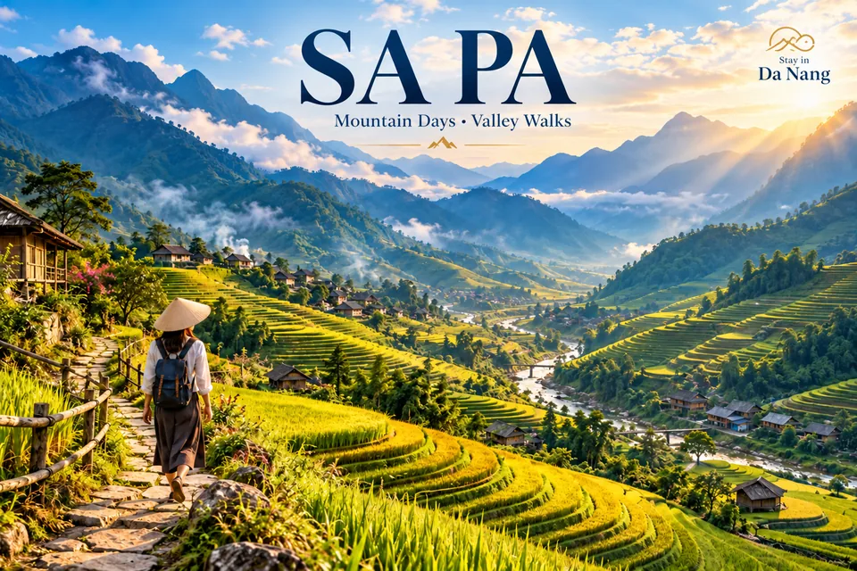

사파 계곡 걷기: 므엉호아와 계절 선택
사파 계곡은 체력에 맞는 코스와 우천 대안을 준비하고 현지 생활을 존중하며 둘러보세요.

입국 규정과 현지 상황 확인하기
비자 조건은 국적과 여행 날짜에 따라 다릅니다. 환불 불가 항공권을 구매하기 전에 베트남 출입국 당국의 공식 전자비자 사이트와 여권 요건을 확인하세요. 지역별 날씨가 다르므로 배를 타거나 산으로 가기 전에는 현지 예보와 경보를 살펴보세요.
전체 예약 조건 비교하기
수하물 허용량, 취소 기한, 픽업 조건과 세금 포함 최종 가격을 확인하세요. 숙소 주소와 예약 번호를 오프라인으로 저장하세요. 합법적인 운송 업체를 이용하고 수영이나 야외 활동 시 현지 안내를 따르세요.